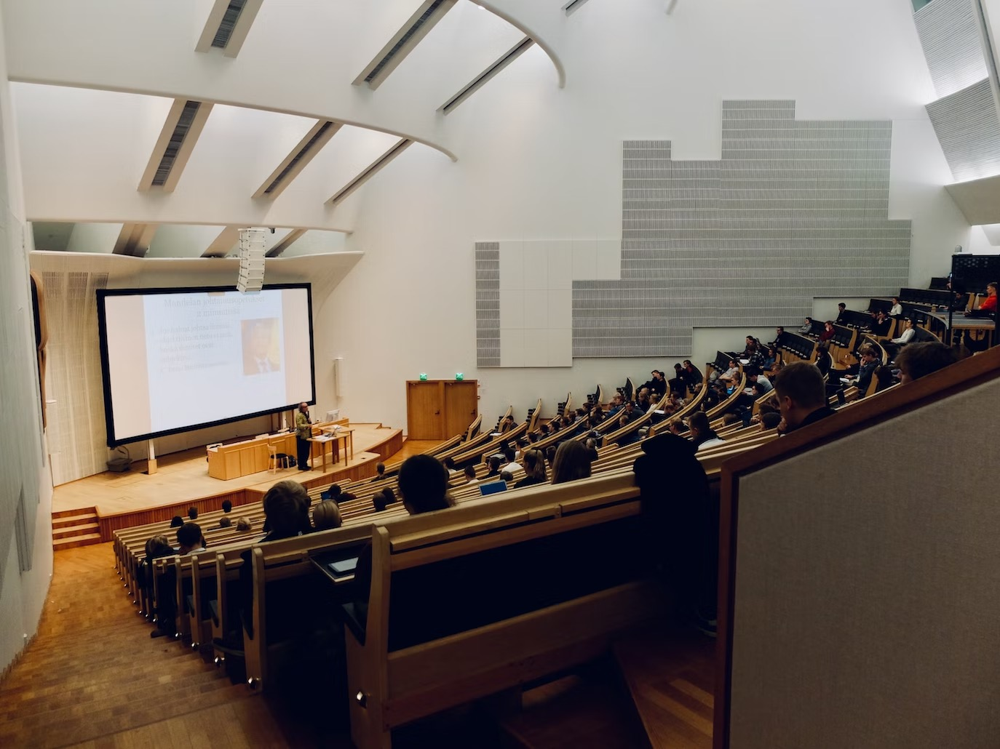
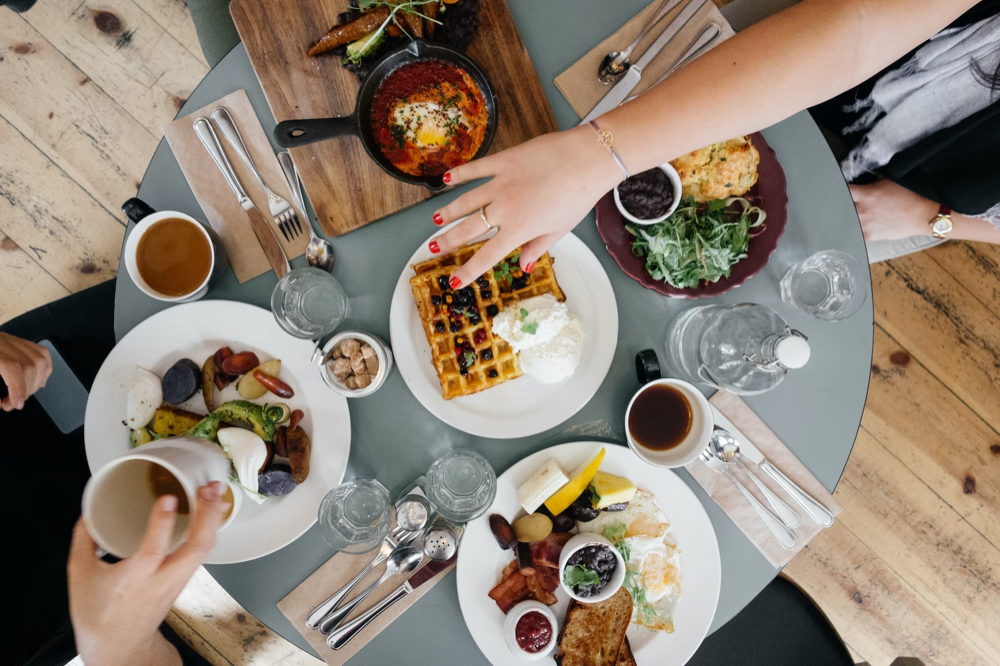
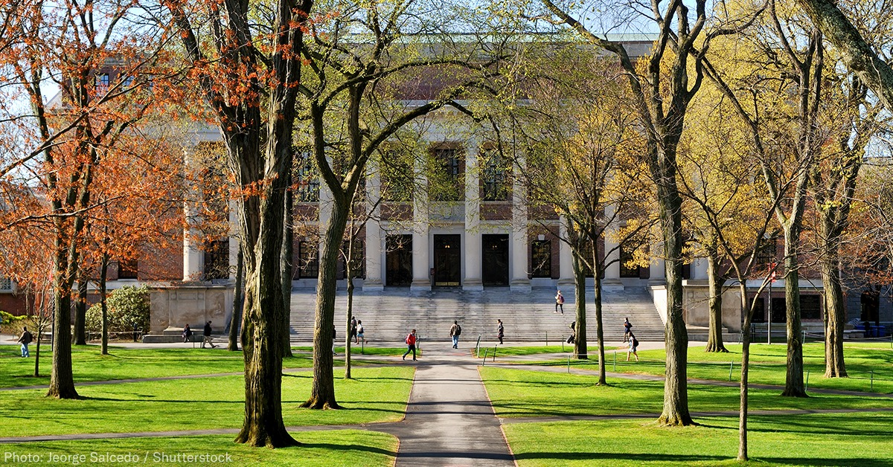
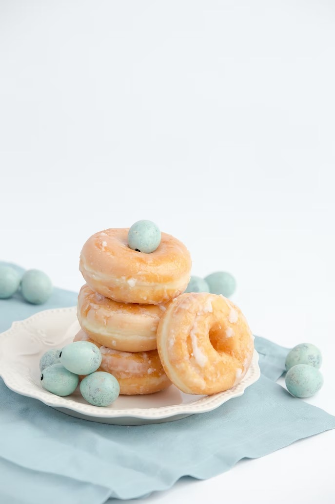

Picking up online orders at the store, which became commonplace during the lockdown, is expected to continue—but with a twist. Instead of doing pickups curbside, more stores are moving it inside the store, so consumers have a chance to look around and possibly buy something else.
The ideal classroom is a positive place where a student can come to work toward specific goals set before them in the class objectives.
People use their phones to make payment.
PIt feels like yesterday we all sat at our TV screens in disbelief as COVID-19 first began its tear through our lives. I was a junior in high school at the time and can remember my exact thoughts as the chaos ensued: "Are they going to cancel my junior prom?"

Look for programs offered by your school or community center. Participating in a club or group can be a good way to stay connected to other people without having to become close friends with them. For instance, you could join a science club, a book discussion group, or a sports team.
By May 2022, most schools — 99% — were offering full-time in-person instruction, a slight increase from January when it was 97%, the survey found. In January, 40% of all public schools also offered a full-time remote option, which decreased to 34% in February, 33% in March, April, and May, the survey found.
> Ring doughnuts are formed by one of two methods: by joining the ends of a long, skinny piece of dough into a ring, or by using a doughnut cutter, which simultaneously cuts the outside and inside shape, leaving a doughnut-shaped piece of dough and a doughnut hole (the dough removed from the center).